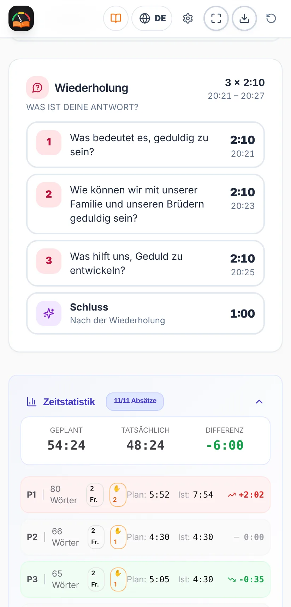

Bedienungsanleitung
Studien-Timer
Das Wachtturm-Studium vorbereiten und pünktlich leiten
Das Wachtturm-Studium vorbereiten und pünktlich leiten
Gleich loslegen? Sieh dir die Kurzanleitung in 7 Schritten an.
Der Studien-Timer hilft dem Bruder, der das Wachtturm-Studium leitet, die Zeit gut einzuteilen und pünktlich zu enden.
Du lädst den Artikel der Woche als PDF und die App:
Inoffizielle App. Sie ist ein kostenloses, unabhängiges Projekt. Sie ist keine offizielle Publikation und hat keine Verbindung zu jw.org oder zur Organisation der Zeugen Jehovas. Der Artikel wird auf deinem eigenen Gerät analysiert: Er wird an keinen Server gesendet und nirgends gespeichert.
Die Bilder in dieser Anleitung verwenden einen erfundenen Beispielartikel, keinen echten Wachtturm-Artikel.
Installiere sie über Google Play: Suche nach „Temporizador de Estudio“ oder öffne diesen Link:
play.google.com/store/apps/details?id=com.comangelo.temporizadorestudio
Im App Store ist sie noch nicht, aber sie funktioniert genauso im Web und lässt sich auf den Home-Bildschirm legen:
Öffne temporizador-estudio.vercel.app im Browser. In Chrome und Edge kannst du sie über das Installationssymbol in der Adressleiste als App installieren.
Updates: Gibt es eine neue Version, zeigt die App die Meldung „Eine neue Version der App ist verfügbar.“ mit der Taste Aktualisieren. Sie aktualisiert sich nie mitten in einem Studium von selbst.

Von oben nach unten findest du:
Die Karte „Artikel dieser Woche“ zeigt die aktuelle Woche (zum Beispiel 9.–15. November 2026) und die Wachtturm-Ausgabe, in der sie steht. Mit den Pfeilen ‹ › kannst du eine andere Woche wählen.
Der Wachtturm wird in der Sprache der App heruntergeladen. Ist die App auf Deutsch, wird die deutsche Ausgabe heruntergeladen; ist sie auf Englisch, die englische, und so weiter für jede Sprache. Für eine andere Sprache stelle zuerst die Sprache der App um (Abschnitt 14). Auf Portugiesisch wird je nach deiner Wahl die Ausgabe für Portugal oder für Brasilien heruntergeladen.
Die App behält eine Kopie der Zeitschrift. Die folgenden Wochen derselben Ausgabe öffnest du direkt mit „Artikel dieser Woche öffnen“, ohne erneut etwas herunterzuladen. Gespeicherte Zeitschriften werden 3 Monate nach ihrer letzten Woche automatisch gelöscht.
Am Computer kannst du das PDF auch irgendwo auf den Startbildschirm ziehen (es erscheint „Wachtturm-PDF hier ablegen“) oder den Ordner wählen, in dem du die Zeitschriften speicherst – die App findet sie dann selbst.
Steht da, die Zeitschrift sei noch nicht erschienen? jw.org veröffentlicht jede Ausgabe einige Wochen im Voraus. Wählst du eine Woche weit in der Zukunft, ist sie vielleicht noch nicht verfügbar.


Nach dem Laden des Artikels siehst du:
Auf der Plankarte sagt dir „Kommentare: X s pro Frage“, wie viel Zeit im Schnitt für jede Frage bleibt.
Ist der Artikel für die gewählte Zeit zu lang, erscheint der Hinweis „Passt nicht“ mit der fehlenden Zeit. Du kannst die Dauer verlängern oder in den Einstellungen schneller lesen lassen.

Jeder Absatz hat eine Zeile mit seiner Nummer, seiner geplanten Zeit und der ungefähren Uhrzeit, zu der er enden sollte. Farbige Etiketten zeigen, worauf du achten musst:
| Etikett | Bedeutung |
|---|---|
| Jakobus 5:7, 8 | Es gibt einen Bibeltext zum Lesen. Die genaue Stelle wird angezeigt. |
| Bild | Die Frage verweist auf ein Bild im Artikel („Siehe auch Bild“). |
| Anmerkung | Es gibt eine Fußnote, die besprochen wird. |
| ★ Kernpunkt | Die Frage erwähnt einen Kasten oder einen hervorgehobenen Gedanken in Anführungszeichen. |
Tippe auf einen Absatz, um ihn zu öffnen. Du siehst die Wörter, die Lesezeit, die Frage und bei langen Absätzen die Extrazeit für mehr Kommentare. Von dort aus:
Absätze mit gemeinsamer Frage (zum Beispiel „5, 6.“) werden als Gruppe behandelt, und die Taste Weiter überspringt die ganze Gruppe.
Empfohlen: Öffne während des Studiums den Präsentationsmodus (Abschnitt 9). Hier wird die allgemeine Funktionsweise erklärt, die in beiden Ansichten gleich ist.
Auf dem Handy sind die wichtigsten Tasten immer unten in der unteren Leiste:


Oben auf der Plankarte kannst du das Studium pausieren und fortsetzen. Die Meldung „In m:ss muss es enden“ erinnert dich daran, wie viel Zeit bis zum Ende bleibt.
Der Bildschirm bleibt an, solange das Studium läuft, damit du das Handy nicht berühren musst. Danach schaltet das Telefon den Bildschirm wieder wie gewohnt aus.
Die Karte des laufenden Teils (Absatz, Einleitung, Wiederholungsfrage oder Schluss) ändert ihre Farbe je nach verstrichener Zeit:
| Farbe | Wann | Was tun |
|---|---|---|
| IM ZEITPLAN | Bis zur geplanten Zeit. | Alles gut: weiter so. |
| NACHSPIELZEIT | Die Zeit ist überschritten, aber um höchstens 30 %. | Die Kommentare abschließen. |
| ÜBERZOGEN | Mehr als 30 % über der geplanten Zeit. | Zum nächsten Absatz gehen. |


In den letzten 5 Minuten des Studiums haben Absätze und Wiederholungsfragen keine Nachspielzeit: Sie springen direkt von Grün auf Rot, damit die Zeit für das Ende nicht verloren geht. Der Schluss behält immer seine Nachspielzeit.
Dauert ein Teil länger, ist das kein Problem: Beim Tippen auf Weiter verteilt die App die restliche Zeit neu, damit du pünktlich endest.
So wird das Studium am besten geleitet. Der Präsentationsmodus vermeidet Ablenkungen: Er zeigt nur das Nötige, die Farben Grün, Gelb und Rot sagen dir auf einen Blick, wo du stehst und wie du in der Zeit liegst, und die Tasten Weiter und Kommentar sind groß und leicht zu finden und zu drücken.
Gedacht, um Handy oder Tablet auf das Pult oder die Bühne zu legen: alles groß und auf einen Blick erkennbar. Er wird mit der Taste ⛶ in der unteren Leiste geöffnet und mit ✕ geschlossen (am Computer auch mit Esc). Auf dem Handy schließt ihn auch die „Zurück“-Taste, ohne die App zu verlassen.
Oben stehen die Uhrzeit, das Ende und die verbleibende Zeit mit einem Fortschrittsbalken. In der Mitte der laufende Teil mit Stoppuhr und Farbe und die Etiketten (zum Beispiel Lesen: Jakobus 5:7, 8). Unten die Tasten Kommentar und Weiter.
Es gibt drei Designs. Du wechselst sie mit der Design-Taste ▦ (oben rechts) oder unter Einstellungen → Anzeige:


Im Präsentationsmodus führt die große Taste von selbst durch das Studium: Studium beginnen → Zu Absatz 1 → Nächster Absatz → Wiederholungsfrage → Zum Schluss → Studium beenden. In den letzten 5 Minuten erscheint der Hinweis, dass es Zeit ist, zu enden.
Beispiel (der Artikel auf den Bildern): Bei einem 60-Minuten-Studium mit 11 Absätzen und 21 Fragen (18 zu den Absätzen und 3 zur Wiederholung) und 35 Sekunden Zeit pro Antwort entfallen etwa 7 Minuten aufs Lesen, 2 Minuten auf Einleitung und Schluss und etwa 51 Minuten auf Kommentare – also gut 2 Minuten pro Frage.
Tippe oben rechts auf ⚙. Die Einstellungen werden auf deinem Gerät gespeichert und sind in vier Registerkarten aufgeteilt:


| Registerkarte | Was du ändern kannst |
|---|---|
| Zeit | Dauer des Studiums (bis 60 Min.). Dauer von Einleitung und Schluss (30 s bis 3 Min.). Besuch des Kreisaufsehers. |
| Lesen | Lesegeschwindigkeit des Lesers: Langsam (150), Normal (180) oder Schnell (210 Wörter/Min.). Zeit pro Antwort (30 bis 90 s; gilt auch für jeden Bibeltext, jedes Bild, jede Anmerkung und jeden Kernpunkt). Lange oder zusammengefasste Absätze: Kein Extra, Normal oder Mehr Kommentare. |
| Hinweise | Ton und Vibration (mit Tasten zum Testen). Hinweis Absatz überzogen, Hinweis „Noch 5 Minuten“ und bis zu zwei Hinweise vor der Wiederholung. |
| Anzeige | Sprache, helles oder dunkles Design (mit vier dunklen Varianten) und das Design des Präsentationsmodus. |
Änderst du Lesegeschwindigkeit oder Zeit pro Antwort während des Studiums, gilt das für das nächste Studium.
Achte darauf, dass das Handy nicht stumm geschaltet ist, wenn du die Hinweise hören willst. Vibration funktioniert unter Android; auf dem iPhone hängt sie vom Browser ab.

In der Woche des Besuchs schalte auf dem Startbildschirm (oder unter Einstellungen → Zeit) „Besuch des Kreisaufsehers“ ein. Das Studium dauert dann 30 Minuten und die Absätze werden nicht gelesen: Fragen, Bibeltexte, Bilder und Wiederholung bleiben. Denk daran, den Schalter nach dem Besuch wieder auszuschalten.

Die App gibt es auf Spanisch, Englisch, Deutsch, Italienisch, Französisch, Portugiesisch, Polnisch, Niederländisch und Rumänisch. Ändere die Sprache mit der Globus-Taste oben oder unter Einstellungen → Anzeige. Beim Wechsel der Sprache:
Diese Anleitung gibt es in all diesen Sprachen: Benutze die Sprachtasten ganz oben.

Die Zeitstatistik vergleicht die geplante mit der tatsächlichen Zeit für das ganze Studium und jeden Absatz, mit der Differenz in Grün (schneller) oder Rot (langsamer) und den gezählten Kommentaren. So siehst du, welche Teile länger gedauert haben, und kannst beim nächsten Mal anpassen (zum Beispiel die Lesegeschwindigkeit).
Mit der Taste Exportieren ⬇ in der oberen Leiste kannst du den Studienplan als Bild (PNG) oder als PDF speichern, um ihn zu drucken oder zu teilen.
Für ein neues Studium nutze die Taste Neu beginnen ↻.